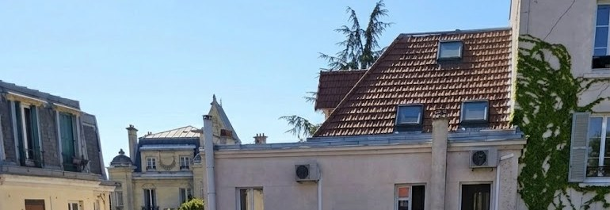

Une institution fondée en 1982
Une même responsabilité éducative, du CP à la 3e
Le Cours Chambertin réunit une histoire, une exigence et une conception commune de la responsabilité scolaire. À partir de septembre 2027, cette continuité s’exprimera de nouveau de l’école élémentaire à l’entrée au lycée.

Ce qui fonde le cadre commun
Un cadre laïque
Le respect des personnes, la primauté des savoirs et l’égalité de traitement fondent l’espace commun, pour les adultes comme pour les enfants.
Cette laïcité n’est pas une formule périphérique : elle organise concrètement l’enseignement et la vie collective, avec un cadre explicite et le même pour tous.
Des objectifs clairs et des progrès observables
L’établissement ne transfère pas à l’enfant la responsabilité de construire seul son parcours. Il lui donne un cadre, des connaissances, des étapes et des exigences adaptées à son âge.
Les équipes enseignent, évaluent, reprennent et ajustent ; les élèves apprennent à fournir un effort et à prendre leur part dans le travail commun.
Notre projet éducatif
Ce que l’institution s’engage à transmettre, les repères qu’elle fixe et la progression qu’elle rend possible, du CP à la 3e.
Depuis 1982, le choix du temps long de l’éducation
Éduquer ne consiste pas à suivre une succession d’effets de mode. Cela suppose de tenir un cap, de transmettre des connaissances, de fixer des repères et de construire des progressions dont les effets se mesurent dans la durée.
Le Cours Chambertin inscrit ses décisions dans cette continuité. La réouverture de l’École n’est pas un projet séparé de l’histoire du Collège : elle redonne à l’institution l’étendue qui était la sienne dès l’origine.
Une institution, deux établissements
L’unité du Cours Chambertin ne signifie pas l’uniformité de ses structures. Les deux établissements partagent une identité, une histoire et des exigences communes ; leurs équipes, leurs organisations et leurs procédures d’admission demeurent propres.
École Chambertin
Établissement privé hors contrat. Elle suit les programmes officiels de l’Éducation nationale et exerce sa liberté pédagogique et de vie scolaire dans le cadre de son projet.
Réouverture en septembre 2027, du CP au CM2.
Collège Chambertin
Établissement privé sous contrat d’association avec l’État. Il dispense les programmes nationaux de la 6e à la 3e et prépare les élèves au diplôme national du brevet et à l’entrée au lycée.
Environ 220 élèves, deux classes par niveau, de la 6e à la 3e.